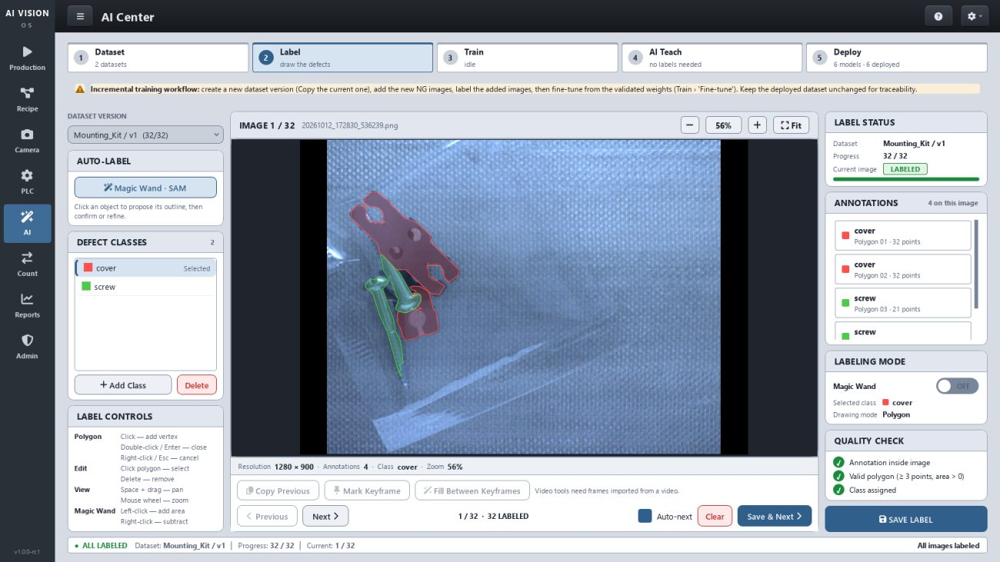
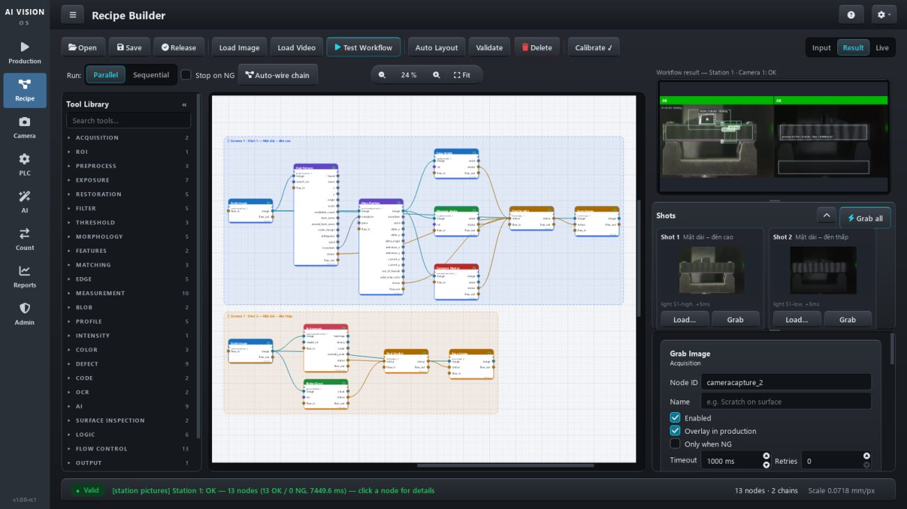

Kéo‑thả quy trình kiểm tra, không cần viết code. Camera, PLC và AI trong một ứng dụng, chạy trên Windows và NVIDIA Jetson. Drag‑and‑drop inspection workflows with no code. Cameras, PLCs and AI in one application, on Windows and NVIDIA Jetson.

Tính năngFeatures
Một máy chạy được tới 4 trạm kiểm tra, mỗi trạm có camera và recipe riêng, dùng chung một PLC. One PC runs up to 4 inspection stations, each with its own camera and recipe, sharing one PLC.
Ảnh và kết quả OK/NG theo từng trạm, từng shot; thống kê sản lượng, biểu đồ Pareto lỗi.
Image and OK/NG result per station and shot; output statistics, defect Pareto chart.
Sơ đồ node song song hoặc tuần tự, dừng khi NG, tự nối dây, thử trên ảnh hoặc video, quản lý phiên bản recipe.
Parallel or sequential node graphs, stop on NG, auto‑wiring, test on images or video, recipe versioning.
Dataset → Label → Train → AI Teach → Deploy. Gán nhãn bằng Magic Wand (SAM), huấn luyện YOLO detect / segment / classify.
Dataset → Label → Train → AI Teach → Deploy. Magic Wand (SAM) labelling, YOLO detect / segment / classify training.
Live view, exposure / gain; map tín hiệu, thanh ghi, mã lỗi; bật đèn theo từng shot; tự kết nối lại.
Live view, exposure / gain; signal, register and error‑code mapping; per‑shot lighting; auto‑reconnect.
Đếm vật thể bằng AI + tracking: qua đường hoặc trong vùng, vào / ra, gửi số đếm cho PLC.
AI + tracking object counting: line or zone, in / out, counts sent to the PLC.
Lịch sử kiểm tra, SPC (Cpk), xuất CSV; nhật ký thao tác, sao lưu và khôi phục.
Inspection history, SPC (Cpk), CSV export; audit log, backup and restore.



Thư viện toolTool library
Kéo tool vào sơ đồ, nối dây, chỉnh ngưỡng và chạy thử ngay trên ảnh.Drag a tool into the graph, wire it, set thresholds and test on an image right away.
| AI (9) | AI Detect, AI Segment, AI Classify, AI Anomaly, AI Heat Map, AI Search, AI Count, AI Piece Count, AI Font (OCR) |
|---|---|
| Đo lườngMeasurement (14) | Caliper, Outer Size, Edge Gap, Gap, Gap Profile, Measure Angle, Corner Angle, Hex Angle, Lug Position, Area Check, Blob Area, Blob Stats… |
| Edge / Profile (10) | Edge Position, Edge Width, Edge Pitch, Edge Pairs, Edge Angle, Profile Position, Profile Width, Profile Peak, Peak Width, Profile Defect |
| Tìm lỗiDefect (18) | Surface Defect, Contour Defect, Compare Master, Crack Tracer, Edge Integrity, Hole Check, Pin Alignment, Assembly Check, Print Verify, Reflection Check, Texture Check, Dent Detector… |
| Định vịPositioning (7) | Find Pattern, Find Shape, Find Contour, Track Pattern, Align Position |
| Màu / Mã / OCRColor / Code / OCR (7) | Color Check, Color Defect, Color Groups, Read Barcode, Read 2D Code (QR, DataMatrix), Read Text |
| 3D (4) | 3D Flatness, 3D Bumps, 3D Compare, Plate Pose |
| Blob / Threshold (10) | Blobs, Threshold, Auto Threshold, Dual Threshold, Morphology, Drop Specks, Fill Holes, Skeleton, Top‑Hat |
| Tiền xử lýPreprocessing (26) | Exposure, Filter, Restoration, Light Fusion, Features, Brightness, ROI Box, Grab / Open Image |
| Logic / LuồngLogic / Flow (20) | Judge, Zone Judge, Defect Classifier, Calculate, Trend Watch, Final Verdict, Branch, Switch / Case, Loop, Parallel, Wait, Stop |
| Output (1) | Save Image |
Phần cứngHardware
Mỗi máy dùng một key gắn với Machine ID. Key không hết hạn, vẫn dùng được khi thay ổ đĩa hoặc cài lại hệ điều hành.Each PC uses one key tied to its Machine ID. Keys never expire and survive a drive replacement or OS reinstall.
| Camera | Basler (USB3 / GigE), FLIR / Teledyne, USB / UVC, thư mục ảnh (camera ảo)image folder (virtual camera) |
|---|---|
| PLC | KEYENCE KV‑8000 (Host Link), Panasonic FP7 (MEWTOCOL), Mitsubishi (MC protocol), Omron (FINS), Modbus TCP |
| Máy tínhComputer | Windows 10/11 x64 · NVIDIA Jetson Orin (JetPack 6) · GPU NVIDIA CUDA (không bắt buộc)NVIDIA CUDA GPU (optional) |
Liên hệ để nhận bộ cài đặt, bản dùng thử, mã nguồn hoặc báo giá.Get in touch for the installer, a trial, the source code or a quote.